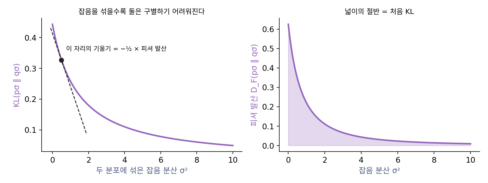

5장 — 잡음을 맞히는 신경망: DDPM과 잡음 제거 스코어 매칭
피셔 발산: 모든 잡음 수준을 합치면 KL로 돌아온다
두 길이 같은 손실에서 만났다. 그런데 잡음 제거 스코어 매칭은 잡음 수준 하나에서 바늘끼리의 제곱 거리를 줄였고, ELBO는 확률의 로그를 올렸다. 바늘의 거리와 확률의 차이는 어떻게 이어질까? 잡음 수준 하나만 잘 배우면 충분할까, 아니면 모든 수준을 다 배워야 할까?
역사: 스코어 매칭과 최대우도의 다리
스코어 매칭이 나온 뒤 사람들은 이것이 로그우도를 올리는 익숙한 학습과 무슨 관계인지 궁금해했다. 시웨이 류(Siwei Lyu)는 2009년 UAI 학술대회 논문 「스코어 매칭의 해석과 일반화(Interpretation and Generalization of Score Matching)」에서 최대우도와 스코어 매칭 사이의 형식적인 연결을 보였다. 두 분포에 같은 잡음을 섞어 가면 둘은 점점 구별하기 어려워지고, 그 구별하기 어려워지는 빠르기가 바늘끼리의 거리라는 것이다. 디퓨전 모델이 퍼진 뒤 킹마(Diederik Kingma)와 가오(Ruiqi Gao)는 2023년 논문에서 흔히 쓰는 디퓨전 손실들이 모두 「잡음 수준마다의 ELBO에 가중치를 붙여 적분한 것」이고, 손실마다 다른 것은 가중치뿐이라고 정리했다.
KL이 줄어드는 빠르기
데이터 분포 p = N(0, 1)과 모델 분포 pθ = N(1, 4)를 생각하자. 두 분포에 똑같이 분산 σ²인 잡음을 섞어 가면 둘은 점점 비슷해지고 KL 발산은 줄어든다. 그 줄어드는 빠르기를 재는 양이 있다.
숫자로 확인한다.
import numpy as np
from scipy.integrate import quad
rng = np.random.default_rng(0)
# p = N(0, 1) (데이터), q = N(1, 4) (모델). 둘에 똑같이 분산 v 인 잡음을 섞는다.
def kl(m1, v1, m2, v2): # 정규분포끼리의 KL
return 0.5 * (np.log(v2 / v1) + (v1 + (m1 - m2)**2) / v2 - 1)
def fisher_div(v, n=4_000_000): # E_p ‖∇log p − ∇log q‖² 를 표본으로
y = rng.normal(0, np.sqrt(1 + v), n)
return np.mean((-y / (1 + v) + (y - 1) / (4 + v))**2)
v, h = 0.5, 1e-5
slope = (kl(0, 1 + v + h, 1, 4 + v + h) - kl(0, 1 + v - h, 1, 4 + v - h)) / (2 * h)
print(f"잡음 분산 0.5 에서 KL 이 줄어드는 기울기 {slope:.4f} −½ × 피셔 발산 {-0.5 * fisher_div(v):.4f}")
def fd_exact(v): # 가우시안끼리는 피셔 발산도 닫힌꼴
A = -1 / (1 + v) + 1 / (4 + v); B = -1 / (4 + v) # ∇log p − ∇log q = A y + B
return A * A * (1 + v) + B * B
print(f"KL(p‖q) {kl(0, 1, 1, 4):.4f} ½ ∫ 피셔 발산 d(잡음 분산) {0.5 * quad(fd_exact, 0, np.inf)[0]:.4f}")
# 잡음 분산 0.5 에서 KL 이 줄어드는 기울기 -0.1728 −½ × 피셔 발산 -0.1728
# KL(p‖q) 0.4431 ½ ∫ 피셔 발산 d(잡음 분산) 0.4431
바늘끼리의 제곱 거리를 데이터 쪽으로 평균 낸 양을 피셔 발산 (두 분포의 스코어가 얼마나 다른지 재는 양 / Fisher divergence)이라 한다. 둘째 줄은 첫째 줄을 잡음 분산 0부터 끝없이 큰 쪽까지 더한 것이다. 잡음이 끝없이 짙으면 두 분포 모두 같은 흐린 가우시안이 되어 KL이 0이므로, 처음의 KL은 「모든 잡음 수준에서 줄어든 양의 합」, 곧 피셔 발산 넓이의 절반이다.

잡음 제거 스코어 매칭이 한 수준에서 줄이는 것은, 신경망과 상관없는 상수를 빼면 바로 이 피셔 발산이었다. 그러니 모든 잡음 수준에서 잡음 제거 스코어 매칭을 알맞은 가중치로 합하면 KL이 되고, KL을 줄이는 학습은 곧 로그우도를 올리는 학습이다. 바늘을 배우는 길과 ELBO를 올리는 길이 같은 곳을 향하는 까닭이 이것이다. 잡음 수준 하나의 스코어 매칭은 KL과 다른 자로 재지만, 모든 수준을 합치면 KL로 돌아온다.
ML에서: 가중치를 고르는 일
잡음 수준마다의 가중치를 어떻게 두느냐가 디퓨전 손실들의 차이다. ELBO 그대로의 가중치, 모든 걸음에 같은 비중을 주는 단순한 손실, 바늘 크기를 고르게 하려고 σ²를 곱한 송과 에르몬의 가중치가 모두 이 가족이다. 킹마와 가오는 가중치가 잡음 수준을 따라 한쪽으로만 변하면, 그 손실이 「데이터에 가우시안 잡음을 섞어 늘린 데이터」의 ELBO와 같다는 것도 보였다. 가중치를 고르는 일은 로그우도라는 잣대에서 얼마나 벗어나 그림의 질 쪽으로 힘을 옮길지 고르는 일이다.
문제 10. 기온 차가 줄어든 기록
두 도시의 낮 기온 차이를 재려는데, 처음 차이는 기록이 없다. 대신 구름이 두 도시를 덮어 가며 시간마다 차이가 줄어든 양만 기록되어 있다: 3.0, 2.0, 1.2, 0.8, 0.5, 0.3, 0.2도. 일곱 시간 뒤에는 두 도시 기온이 같아졌다. (가) 처음 차이는? (나) 기록을 넷째 시간까지만 했다면 무엇을 알 수 있는가?

줄어든 양만 있으면 처음 차이는 모르죠. 처음 값이 있어야 뭘 빼든 하잖아요.

마지막에 차이가 얼마가 됐다고 했어요?

0이요. 아, 그러면 처음 차이는 줄어든 양을 다 더한 거네요. 3.0 + 2.0 + 1.2 + 0.8 + 0.5 + 0.3 + 0.2 = 8.0도예요.

(나)는 넷째 시간까지 합이 7.0이라서, 처음 차이가 적어도 7.0도라는 것까지만 알아. 나머지가 얼마인지는 몰라. 아래쪽 경계만 남는 거지.
끝이 0이라는 걸 알 때만 「줄어든 양의 합 = 처음 값」이 돼요. 그리고 중간에 끊으면 합의 일부만 남아요.
미적분학 기본정리네요. 도함수를 끝까지 적분하면 처음 값과 끝 값의 차가 나와요.
문제 11. 옆으로 옮긴 가우시안
데이터 분포가 p = N(0, 1), 모델이 그것을 옆으로 2만큼 옮긴 pθ = N(2, 1)이다. (가) KL(p ‖ pθ)는? (나) 두 분포에 같은 분산 σ²의 잡음을 섞었을 때 피셔 발산은? (다) 피셔 발산 넓이의 절반이 (가)와 같은지 확인하고, 잡음 분산 0~1 구간이 그 가운데 얼마를 차지하는지 구하라.
(가)는 분산이 같은 가우시안끼리라서 평균 차이 제곱의 절반, 2²/2 = 2예요. (나)는 두 바늘이 −x와 −(x − 2)라서 차이가 늘 2, 제곱하면 4예요. 그런데 이걸 잡음 분산 0부터 끝없이 적분하면 무한대가 돼요. 2가 안 나오네요.
잡음을 섞은 뒤의 두 분포는 무엇이에요? 바늘을 그 분포로 다시 적어 봐요.

N(0, 1 + σ²)과 N(2, 1 + σ²)이에요. 바늘이 −x/(1 + σ²)과 −(x − 2)/(1 + σ²)이라 차이가 2/(1 + σ²), 피셔 발산은 4/(1 + σ²)²예요. 잡음 섞기 전의 바늘을 그대로 썼던 거예요.

(다)는 ½∫ 4/(1 + u)² du를 0부터 끝까지 하면 ½ × 4 × [−1/(1 + u)]의 값이 2 × (0 − (−1)) = 2예요. 맞아요. 0부터 1까지만 하면 2 × (1 − 1/2) = 1이라서, 잡음 분산 0~1 구간이 KL의 딱 절반을 맡아요.

잡음이 짙어질수록 두 분포가 빨리 닮아 가니, 넓이는 잡음이 옅은 쪽에 몰려요. 기온 차 기록에서 처음 몇 시간이 많이 줄었던 것처럼요.
적분할 때 피적분 함수가 적분 변수에 따라 바뀐다는 걸 놓쳤어요. 매개변수가 있는 적분에서 상수로 착각하는 실수랑 같아요.
문제 12. 짙은 잡음만 잘 배운 모델
데이터가 ±2에 봉우리를 둔 두 봉우리 분포(각 표준편차 0.5)이고, 모델은 평균과 분산이 같은 가우시안 N(0, 4.25)이다. 두 분포에 같은 잡음을 섞었을 때 KL과 피셔 발산은 잡음 분산 0에서 0.724와 3.758, 0.5에서 0.258과 0.897, 2에서 0.038과 0.074, 8에서 0.0013과 0.0009다. (가) 이 모델은 잡음 분산 8 이상에서 잡음 제거 스코어 매칭을 거의 완벽하게 한다. 그러면 좋은 생성 모델인가? (나) KL 0.724 가운데 잡음 분산 0~2 구간이 맡는 몫은 대략 얼마일까? (다) 이것은 ELBO의 가중치와 단순한 손실의 차이에 대해 무엇을 말해 주는가?
잡음 분산 8에서 피셔 발산이 0.0009면 거의 0이에요. 그 수준에서는 참 바늘과 거의 같으니까 잘 배운 모델이죠.
그 모델로 그림을 뽑으면 봉우리가 몇 개 나와요?

가우시안이니까 하나요. 데이터는 봉우리가 둘인데요. 짙은 잡음에서 바늘이 맞는다고 데이터를 맞힌 건 아니네요.

잡음을 짙게 섞으면 봉우리가 몇 개였는지가 지워지니까, 그 수준에서는 가우시안도 두 봉우리 분포와 거의 구별이 안 돼. 봉우리 모양은 옅은 잡음의 바늘에만 남아 있어. (나)는 피셔 발산이 0에서 3.758, 2에서 0.074로 떨어지니까 넓이의 대부분이 0~2에 있을 거야. 수치로 적분하면 94.7%고, 2~8이 5.1%, 8 이상이 0.2%야.

(다)는요? 로그우도를 정하는 건 어느 수준이에요?

옅은 잡음이요. 그래서 ELBO의 가중치가 잡음이 옅은 걸음에 몰려 있었던 거예요. 단순한 손실은 거기를 덜 치니까 로그우도는 조금 손해 보고, 대신 짙은 잡음에서 정해지는 큰 모양에 힘을 쓰는 거고요.

그럼 어느 수준도 버릴 수는 없어. 짙은 잡음을 못 배우면 출발이 틀리고, 옅은 잡음을 못 배우면 모양이 틀려. 가중치는 둘 사이에 힘을 나누는 문제고.

그래요. 잡음 제거 스코어 매칭, 잡음 예측, ELBO가 모두 같은 손실의 다른 얼굴이고, 남은 선택은 잡음 수준마다의 가중치예요.
시험공부를 기본 문제만 하면 반타작은 하지만 만점은 못 받는 거랑 같네요.